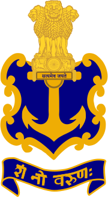

Indian Navy

The Indian Navy is the maritime branch of the Indian Armed Forces. The President of India is the Supreme Commander of the Indian Navy. The Chief of Naval Staff, a four-star admiral, commands the navy. As a blue-water navy, it operates significantly in the Persian Gulf Region, the Horn of Africa, the Strait of Malacca, and routinely conducts anti-piracy operations and partners with other navies in the region. It also conducts routine two to three month-long deployments in the South and East China seas as well as in the western Mediterranean sea simultaneously.